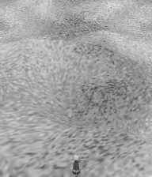
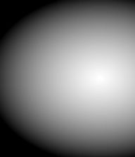
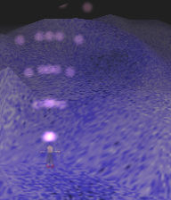
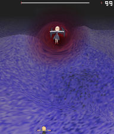

ピクセルシェーダのサンプルです。
| SamplePS | ピクセルシェーダサンプル |
| PS01 | モノクロフィルタ |
| PS02 | マスク処理 |
| PS03 | ボス周囲のゆらぎ(シェーダ版) |
| PS01 モノクロフィルタ | |
|  |
モノクロフィルタです。 頂点色とテクスチャのRGB値を平均し、出力色とします。 |
//SamplePS01.txt task TSamplePS1 { //パス設定 let dir = GetCurrentScriptDirectory(); let pathShader = dir ~ "SamplePS01_HLSL.txt"; //シェーダ生成 let objShader = ObjShader_Create(); ObjShader_SetShaderF(objShader, pathShader); ObjShader_SetTechnique(objShader, "TecMonotone"); loop { //特定の描画優先度にシェーダを適応 SetShaderI(objShader, 0, 100); loop(180){yield;} //シェーダ解除 ResetShaderI(0, 100); loop(180){yield;} } }
//SamplePS01_HLSL.txt //================================================================ //大域設定値 //Texture sampler sampler0_ : register(s0); //================================================================ //-------------------------------- //ピクセルシェーダ入力値 struct PS_INPUT { float4 diffuse : COLOR0; //ディフューズ色 float2 texCoord : TEXCOORD0; //テクスチャ座標 float2 vPos : VPOS; //描画先座標 }; //-------------------------------- //ピクセルシェーダ出力値 struct PS_OUTPUT { float4 color : COLOR0; //出力色 }; //================================================================ // シェーダ //-------------------------------- //ピクセルシェーダ PS_OUTPUT PsMonotone( PS_INPUT In ) : COLOR0 { PS_OUTPUT Out; //テクスチャの色 float4 colorTexture = tex2D(sampler0_, In.texCoord); //頂点ディフーズ色 float4 colorDiffuse = In.diffuse; //合成 float4 color = colorTexture * colorDiffuse; //モノトーンの計算 Out.color.rgb = ( color.r + color.g + color.b ) * 0.3333f; Out.color.a = color.a; return Out; } //================================================================ //-------------------------------- //technique technique TecMonotone { pass P0 { PixelShader = compile ps_3_0 PsMonotone(); } }
| PS02 マスク処理 | |
|  |
マスク処理です。 マスク用テクスチャのRGB値を使用し、RGB=黒に近いほどα値を減少し描画します。 マスク用テクスチャが黒色の箇所は、描画されません。 この例では、背景より上の描画優先度にマスクを適応しています。 (背景にはマスクは適用されていません) |
//SamplePS02.txt task TSamplePS2 { //パス設定 let dir = GetCurrentScriptDirectory(); let pathShader = dir ~ "SamplePS02_HLSL.txt"; //シェーダ生成 let objShader = ObjShader_Create(); ObjShader_SetShaderF(objShader, pathShader); ObjShader_SetTechnique(objShader, "TecMask"); //シェーダにマスク画像を設定 let pathMask = dir ~ "SamplePS02_Mask.png"; ObjShader_SetTexture(objShader, "textureMask_", pathMask); //特定の描画優先度にシェーダを適応 SetShaderI(objShader, 30, 100); }
//SamplePS02_HLSL.txt //================================================================ //大域設定値 //Texture sampler sampler0_ : register(s0); //-------------------------------- //マスク用テクスチャ //画面幅(マスクテクスチャサイズ) const float SCREEN_WIDTH = 640; const float SCREEN_HEIGHT = 480; texture textureMask_; sampler samplerMask_ = sampler_state { Texture = <textureMask_>; }; //================================================================ //-------------------------------- //ピクセルシェーダ入力値 struct PS_INPUT { float4 diffuse : COLOR0; //ディフューズ色 float2 texCoord : TEXCOORD0; //テクスチャ座標 float2 vPos : VPOS; //描画先座標 }; //-------------------------------- //ピクセルシェーダ出力値 struct PS_OUTPUT { float4 color : COLOR0; //出力色 }; //================================================================ // シェーダ //-------------------------------- //ピクセルシェーダ PS_OUTPUT PsMask( PS_INPUT In ) : COLOR0 { PS_OUTPUT Out; //テクスチャの色 float4 colorTexture = tex2D(sampler0_, In.texCoord); //頂点ディフーズ色 float4 colorDiffuse = In.diffuse; //合成 float4 color = colorTexture * colorDiffuse; Out.color = color; if(color.a > 0) { //-------------------------------- //マスク用のテクスチャから色成分を取得 //UVでの位置は画像ファイルの横幅と高さからの割合 //例えば、640x480の画像の位置(320,240)はUVでは0.5,0.5になる。 float2 maskUV; //描画先からマスク用テクスチャの位置を計算 maskUV.x = In.vPos.x / SCREEN_WIDTH; maskUV.y = In.vPos.y / SCREEN_HEIGHT; float4 colorMask = tex2D(samplerMask_, maskUV); //マスクのRGB値を出力結果のα値として合成する Out.color.a = ( colorMask.r + colorMask.g + colorMask.b ) * 0.3333f * color.a; } return Out; } //================================================================ //-------------------------------- //technique technique TecMask { pass P0 { PixelShader = compile ps_3_0 PsMask(); } }
| PS03 ボス周囲のゆらぎ(シェーダ版) | |
|  |
ボス周囲のゆらぎエフェクト(シェーダ版)です。 ←の画像ではゆらいでいるのがわかりづらいので 実際の動きは本体付属のサンプルスクリプトを実行お願いします。 以下の手順で行えます。 1) 描画用テクスチャに背景を描画する。 2) 背景を描画したテクスチャをゆがませて、画面に描画する。 |
//SamplePS03.txt task TWaveCircle() { //レンダリングターゲットに使用するテクスチャ let renderTexture = GetReservedRenderTargetName(0); let frame = 0; //フレーム let baseEffectRadius = 128; //基準エフェクト半径 let outerFluct = 16; //エフェクト半径の最大変化量 let effectRadius = 0; //エフェクト半径 let priEffectMin = 20; //エフェクトをかける最小優先度 let priEffectMax = 28; //エフェクトをかける最大優先度 //背景のみエフェクトの対象とする //エフェクトの描画でまかなえるため、 //優先度20〜28の通常描画を無効にする。 SetInvalidRenderPriorityA1(priEffectMin, priEffectMax); let frameWidth = GetStgFrameWidth(); let frameHeight = GetStgFrameHeight(); let frameLeft = GetStgFrameLeft(); let frameRight = frameLeft + frameWidth; let frameTop = GetStgFrameTop(); let frameBottom = frameTop + frameHeight; //-------------------------------- //ゆがみオブジェクト let objWave = ObjPrim_Create(OBJ_SPRITE_2D); //2Dスプライトオブジェクト生成 Obj_SetRenderPriorityI(objWave, 25); //描画優先度を設定 ObjPrim_SetTexture(objWave, renderTexture); //テクスチャを設定 ObjSprite2D_SetSourceRect(objWave, frameLeft, frameTop, frameRight, frameBottom); ObjSprite2D_SetDestRect(objWave, 0, 0, frameWidth, frameHeight); Obj_SetRenderPriorityI(objWave, priEffectMax + 1); //ゆがみオブジェクトにシェーダを設定 let pathShader = GetCurrentScriptDirectory ~ "SamplePS03_HLSL.txt"; ObjShader_SetShaderF(objWave, pathShader); ObjShader_SetTechnique(objWave, "TecWave"); //ボスのライフが0になるまでエフェクトをかける。 let objEnemy = GetEnemyBossObjectID[0]; while(ObjEnemy_GetInfo(objEnemy, INFO_LIFE) > 0) { //エフェクト半径 effectRadius = baseEffectRadius + outerFluct * sin(frame*4); let enemyX = ObjMove_GetX(objEnemy); //敵座標X let enemyY = ObjMove_GetY(objEnemy); //敵座標Y //-------------------------------- //優先度20〜28(背景)をエフェクト用のテクスチャに描画 //シェーダ解除 RenderToTextureA1(renderTexture, priEffectMin, priEffectMax, true); //-------------------------------- //シェーダにパラメータを設定 ObjShader_SetFloat(objWave, "frame_", frame); ObjShader_SetFloat(objWave, "enemyX_", enemyX + frameLeft); ObjShader_SetFloat(objWave, "enemyY_", enemyY + frameTop); ObjShader_SetFloat(objWave, "waveRadius_", effectRadius); frame++; yield; } //エフェクト用オブジェクト削除 Obj_Delete(objWave); ClearInvalidRenderPriority(); }
//SamplePS03_HLSL.txt //================================================================ //大域設定値 //Texture sampler sampler0_ : register(s0); //-------------------------------- //ゆがみ生成用パラメータ static const float RENDER_WIDTH = 1024; //レンダリングテクスチャの幅 static const float RENDER_HEIGHT = 1024; //レンダリングテクスチャの高さ float frame_; //フレーム数 float enemyX_; //敵の位置X float enemyY_; //敵の位置Y float waveRadius_; //エフェクトの半径 //================================================================ //-------------------------------- //ピクセルシェーダ入力値 struct PS_INPUT { float4 diffuse : COLOR0; //ディフューズ色 float2 texCoord : TEXCOORD0; //テクスチャ座標 float2 vPos : VPOS; //描画先座標 }; //-------------------------------- //ピクセルシェーダ出力値 struct PS_OUTPUT { float4 color : COLOR0; //出力色 }; //================================================================ // シェーダ //-------------------------------- //ピクセルシェーダ PS_OUTPUT PsWave( PS_INPUT In ) : COLOR0 { PS_OUTPUT Out; //-------------------------------- //ゆらぎを計算 float dist2 = pow(In.vPos.x-enemyX_ ,2) + pow(In.vPos.y-enemyY_ ,2); float dist = sqrt(dist2); float sinTheta = (In.vPos.y - enemyY_) / dist; float cosTheta = (In.vPos.x - enemyX_) / dist; //歪み作成用のsinに使用する角度パラメータ float angle = In.vPos.y - enemyY_ + In.vPos.x - enemyX_ + frame_; angle = radians(angle); //該当ピクセルの歪みの半径を計算 //エフェクト半径の1/16を最大の歪み幅とする float waveRadius = waveRadius_ + waveRadius_/16 * (-1 + sin(angle)); //中心から距離が離れるほど影響を小さくする float powerRatio = (waveRadius - dist) / waveRadius; if(powerRatio < 0){powerRatio = 0;} //色情報を取得する位置のバイアス値 float biasRadius = waveRadius * powerRatio; float biasX = biasRadius * cosTheta; float biasY = biasRadius * sinTheta; //テクスチャの色情報を取得する位置 float2 texUV; texUV.x = -biasX / RENDER_WIDTH + In.texCoord.x; texUV.y = -biasY / RENDER_HEIGHT + In.texCoord.y; //-------------------------------- //テクスチャの色 float4 colorTexture = tex2D(sampler0_, texUV); //頂点ディフーズ色 float4 colorDiffuse = In.diffuse; //合成 float4 color = colorTexture * colorDiffuse; //色を赤っぽく変化させる if(powerRatio > 0) { color.g = color.g * (1 - powerRatio); color.b = color.b * (1 - powerRatio); } Out.color = color; return Out; } //================================================================ //-------------------------------- //technique technique TecWave { pass P0 { PixelShader = compile ps_3_0 PsWave(); } }